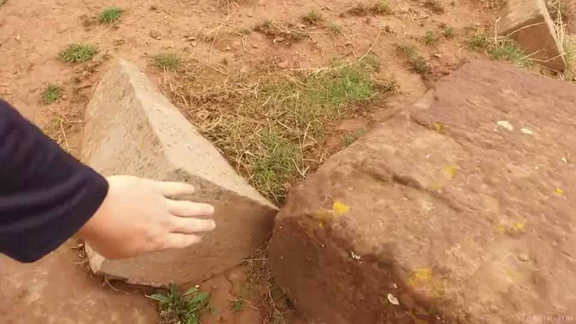
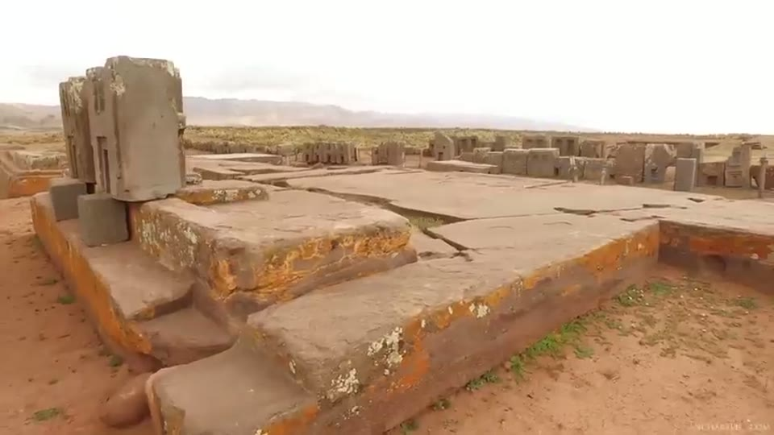
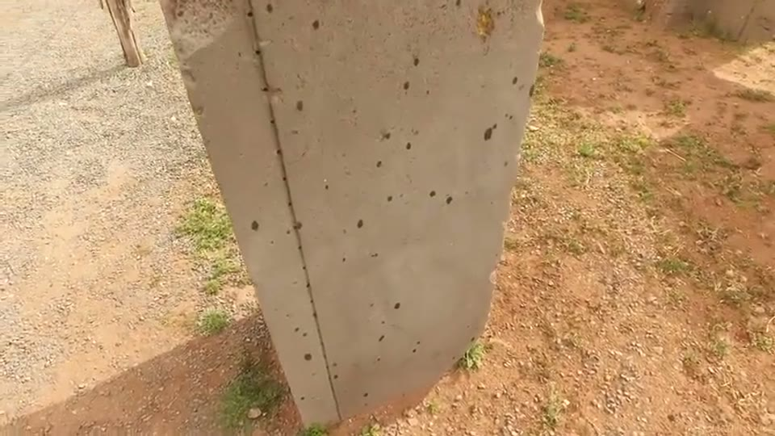
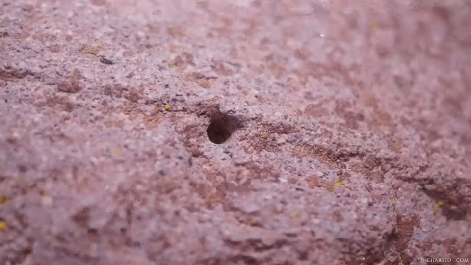
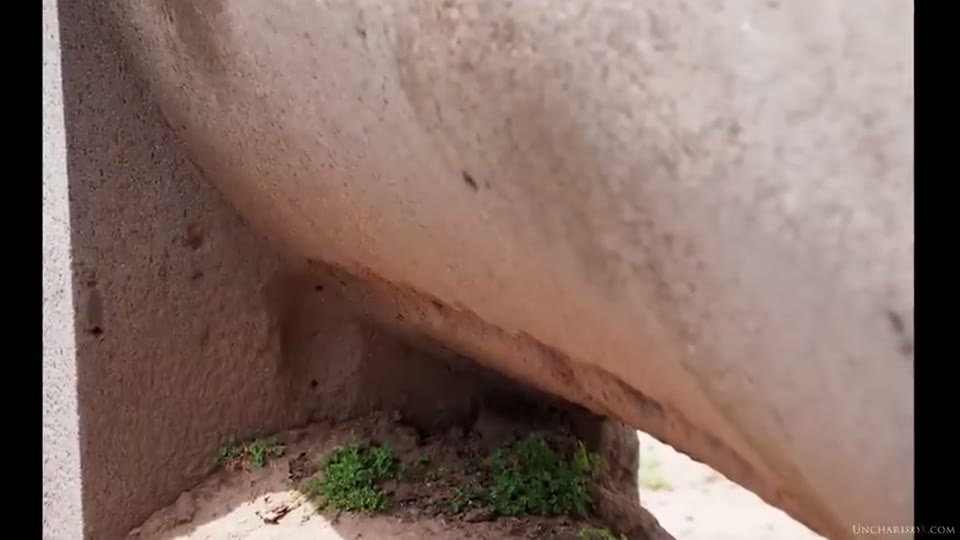

UnchartedX
The Ancient Enigmas of Puma Punku and Tihuanaco!
Ben · 31 min · watch on YouTube · summarised 2026-09-30
An introduction rather than an investigation, and Ben says so 03:18–05:07. He sets out a multi-part series and names what the later chapters will cover: the masonry and architecture of each complex, "a detailed review of the proposals for geopolymer use", the history of work on the site and the dating controversy including Arthur Posnansky, the geological history and the connection to Lake Titicaca, and theories about the site's original purpose.
The Posnansky chapter is the one that was eventually made, three years later, and it is held here as the Tiahuanaco entry. The series itself was announced three weeks earlier, at the end of the granite cave entry, where Ben reads out the supporter email asking him to go to Puma Punku and agrees on camera to do it.
The site as he frames it: 12,600 ft / 3,840 m on the Bolivian Altiplano, about 15 miles from the present shore of Lake Titicaca. The mainstream date is "barely 2000 years old"; alternative researchers using alignment methods put it as far back as 17,000 years. His own reading is more modest and is the one the series is built on: "at least to my eyes the site shows clear evidence of at least two technologically different levels of civilization."
The geopolymer question, left open on purpose
Before anything else, Ben addresses the proposal that the andesite blocks are poured or moulded rather than carved 05:34–06:30. He does not take a side: "I'm not saying that that is what I think they are. I'll leave my conclusions for that specific video."
What he does argue is that the question does not change the difficulty:
"In either case — one case being these are quarried and precision carved andesite blocks, the other case being that they're some form of incredibly hard geopolymer mix that somehow creates volcanic andesite, and that they've still been shaped with incredible precision — in either case we're talking about a lost form of ancient high technology."
That hypothesis is argued in full, with laboratory analysis, on another channel in the casting entry. In his own classification video, five months before this one, Ben's best guess at how the walls were made is stone somehow softened and pushed into place.
The quotation from the other side
This is the strongest thing in the video and none of it is Ben's 06:30–08:47. He reads a passage about the Puma Punku blocks, sourced — he says — from the website geopolymer.org, which is in turn quoting a peer-reviewed paper:
"They have unprecedented smooth finishes, perfectly flat faces at exactly 90 degrees, interior and exterior right angles. How were such perfect cuts made with simple stone tools? They have a Mohs hardness of 6 to 7, like quartz… To obtain the smooth finish, the perfectly planar faces and exact interior and exterior right angles on the finely dressed stones, they resorted to techniques unknown to the Inca and to us at this time. The sharp and precise 90-degree interior angles observed on various decorative motifs most likely were not made with hammerstones — no matter how fine the hammerstone's point, it could never produce the crisp right interior angles seen on Tiwanaku and Puma Punku stonework. Comparable cuts in Inca masonry all have rounded interior angles typical of the pounding technique. The construction tools of the Tiwanakans, with perhaps the possible exception of hammerstones, remain essentially unknown and have yet to be discovered."
He names the source: Who Taught the Inca Stonemasons Their Skills? A Comparison of Tiahuanaco and Inca Cut-Stone Masonry, published in the Journal of the Society of Architectural Historians in 1997. His summary of it: "the techniques used were not the same as those demonstrated by the Inca, and there were also techniques both unknown to the Inca and unknown to us today. So we don't know how they did it."
The page itself is on screen while he reads, and it carries more than the narration does. It is laid out as a scientific paper — numbered sections, bracketed references, captioned figures — and the passage sits under its own heading, "An archeologist who says we don't know!". The authors are printed as Protzen et al. [13]. A black-boxed annotation beside the figures reads "Remember: Mohs hardness = 6-7 (7 = quartz)".
The other thing the page shows is the shape of the quotation. It is printed with ellipses at four points — "(…)" — marking material left out between the sentences. Ben reads it as continuous prose.

That a mainstream architectural-history paper states the tools used here are unknown and have yet to be discovered.
The layout, and how much is not dug
Puma Punku sits about a kilometre from Tiwanaku, and Ben notes there is "plenty of debate on whether or not they are actually the same site" 08:47–10:10. Three main features at Tiwanaku besides it:
- the Akapana stepped pyramid, "still only partially excavated, a condition that the entire site seems to endure"
- the sunken temple, with carved heads embedded in its walls and the Viracocha idol at its centre
- the Kalasasaya, a massive raised platform
He flags the thing the later entry develops at length: "much of the architecture here has been rebuilt from ruins, and many of the monuments and the Sun gates have been moved from their original locations."
Two observations about scale 10:10–11:36. The modern town and much of the surrounding farmland sit directly on the remnants of a city; blocks matching those on site are turned up in the fields. And the site is buried in clay-rich red topsoil "which had to have come from somewhere" — the blocks "seem to emerge out of the very ground wherever you look."

That worked stone emerges from the red soil across the site.
Satellite imaging of three valleys, examining the evidence for suka kollus — a flooded raised-field agricultural method — has been used to estimate a population of anywhere between 200,000 and 1.5 million. Most buildings would have been adobe with grass roofs, long since returned to the soil; Ben notes local farmers still build the same way.
He also reports a 2018 announcement by Bolivian anthropologists of a buried citadel and possibly a second stepped pyramid outside the current perimeter, found with aerial precision cameras and infrared, with excavation estimated at fifty years or more. He quotes the announcement and says plainly that the text is "Google translated from the original Spanish."
The circular argument
Ben's rhetorical centrepiece 13:28–18:05, and it is about how a debate is conducted rather than about stone.
The argument he attributes to orthodox academics runs: a city this size needs a large population; a large population needs a great deal of food; food at 12,600 ft needs advanced agricultural methods; there is no evidence for those methods at 10,000 BC; therefore the city cannot be that old.
His answer is in two parts. First, that the redating proposals are not based on agriculture at all — he lists what they are based on: evidence of violent destruction on the site, erosion in the stones, equatorial and celestial alignments to two significant dates in the roughly 26,000-year precession cycle, and carbon dating results that themselves challenge the orthodox date. Second:
"If you accept the premise that, due to this evidence, this place and this civilization must have existed in those times, then this fact is in and of itself evidence that advanced agriculture must have existed back then, as it's the only way to support the necessary population. This simple assertion invalidates the entire rebuttal."
He offers two parallels. The rebuttal to the Sphinx redating — that no other megalithic structures are dated to that period — which he says is still used despite Göbekli Tepe having been established for more than ten years at around 10,000 BC, relatively close to Egypt, and "the biggest megalithic site in the world." And Gunung Padang, where he says new work is dismissed on the strength of the narrative it challenges.
He then speculates about motive — that academics derive position, authority and livelihood from a particular version of history, "very much like a religious priest" — and immediately qualifies it: "I'm not saying that we need to just blindly accept every proposal that comes out, but we should be able to debate and discuss new evidence in a rational manner."
What is on the record
The site was long abandoned when Europeans reached it. Pedro Cieza de León came upon the remains in 1549 while searching for the Inca capital of Collasuyu 18:05–19:00. What the local people told the Spaniards, on Ben's account: that the ruins had appeared overnight, raised either by giants or by magic — a god who turned a whole population to stone for refusing to house his messenger. They laughed at the suggestion that the Inca built it and affirmed it had existed long before that civilisation emerged.
The orthodox account, stated fairly 19:00–19:56: Tiwanaku is the progenitor of the Inca; its people left either because the Aymara forced them out or because a 40-year drought broke the agriculture; around a thousand years ago they moved north into the Sacred Valley, founded Cusco, and became the Inca. Ben's assessment of it: "all of this is very hypothetical, with only scant traces of real evidence to support it."
On dating: the earliest carbon results put a human presence at around 1500 BC, while the accepted date for the origins of the two sites is around 200 AD. His objection is the one he makes everywhere — that radiocarbon dates organic material and "has nothing to do whatsoever with stonework or architecture" — with an addition here: some environments do not preserve organic remains at all, and an absence of dating evidence "isn't actually evidence for anything at all, other than just a big question mark."
The objects he picks out
Four, at the end, and the first is the famous one 24:34–26:26:
- the H-blocks at Puma Punku, which he offers as the clearest examples of the sharp angles and precision on the site
- a left-turn arrow shape carved into one of the andesite blocks
- a tiny channel cut into a flat andesite surface with evenly spaced small drill holes along it — which he says is the hardest thing on the site to explain with hand tools, and which is not unique: the same holes turn up across the site, including in red sandstone floor tiles
- the super block at Tiwanaku, which he describes as having clamp marks, drill holes, a front carved in the Tiwanaku style resembling the Sun gates, precision surfaces, and a back cut into a complex three-dimensional curve that makes him think of water — "almost looks like a sluice gate"

The most-cited objects at Puma Punku, and the shape the quoted paper calls a riddle.

Small holes set along an incised channel in a flat face.


The block with drill holes and a carved front, whose back is cut to a complex curve.
That last object appears again in the Tiahuanaco entry three years later, where he calls it the super block and offers the same sluice-gate reading. The clamp marks he mentions here are not repeated there.
How the footage was obtained
Worth recording because Ben states it himself 23:11–24:34. Video is not permitted at the site — "at least they didn't in 2015" — and more of the stones are being roped off each visit. He says his camera "was accidentally set to take some video when I was last here", argues that fencing visitors off from ancient sites is wrong in principle, and encourages viewers to step over the ropes "at least metaphorically speaking."
Most of the footage in the video is from a 2015 trip with better cameras; he was also there in 2013 with Graham Hancock and Brien Foerster, and has spent four full days on site across the two visits.
Posnansky, and a book that arrived late
The closing section 26:26–29:37. Arthur Posnansky was an Austrian who spent much of his life as a public figure in Bolivia, worked on these sites for fifty years, and died there in 1946. His self-published Tihuanacu: The Cradle of American Man — described here as two books of two volumes each — states his reasoning for dating the site to around 15,000 BC, and is the source of many of the earliest images of Tiwanaku in circulation. Ben notes he is discussed extensively in **Graham Hancock's *Fingerprints of the Gods***, which he dates to 1996.
Two things Ben says about the state of the argument are unusually candid. Posnansky is "widely criticised by mainstream archaeology" while having arranged permits for mainstream archaeologists to work on the site. And:
"I'm sort of having trouble finding the specifics of the arguments here — whether it's exactly what Posnansky said, all the details of the rebuttal against it."
A supporter funded a copy of the first volume, which arrived "just as I was finishing up this video"; he says he has done no more than page through it, and asks viewers to help fund the second. In the entry made three years later he is reading from the books at length.
What you can check yourself
- The 1997 paper. Named, with its journal and year, and the quoted passage can be read against the source.
- The site elevation and the distance to Lake Titicaca, both given as figures.
- Whether the blocks have interior right angles, which is the specific claim the paper makes and which a photograph can be put to.
- The drill holes, said to appear across the site and in red sandstone floor tiles as well as andesite — a counting exercise for anyone on the ground.
- Cieza de León's 1549 account, which is published.
- The 2018 Bolivian announcement, quoted with its substance.
- Göbekli Tepe's dating, offered as the counter-example to the Sphinx rebuttal.
- Posnansky's volumes, and whether the work is two books of two volumes or four.
What the video does not settle
- It is an introduction and says so. The masonry, the geopolymer proposals, the dating controversy, the geology and the site's purpose are all explicitly deferred to later videos.
- The geopolymer question is left open by the presenter, who states that he is not giving his conclusion here.
- The 1997 paper is quoted at second hand, and at second hand it is abridged. Ben's source is a geopolymer.org page quoting the paper, not the journal, and he says so. The page prints the passage with ellipses at four points where material has been cut; the narration reads it through as continuous text. What the omitted passages say has not been checked against the journal.
- The 17,000-year figure has no attribution. "Independent authors and researchers using techniques like astro archaeology and cosmic alignment" are not named.
- The redating evidence is listed, not shown. Violent destruction, erosion, two precession dates and challenging carbon results are named in a sentence each; none is dated, sourced or demonstrated in this video.
- The population range is a hundred-thousand-wide estimate with no study behind it. 200,000 to 1.5 million, from satellite evidence for suka kollus; no paper or survey is named.
- The 2018 citadel is a press announcement. The agency is not named, the text is machine-translated, and Ben says himself he is not confident in the fifty-year estimate.
- The 40-year drought and the Aymara expulsion are given as the accepted account without citation, and Ben calls the whole reconstruction hypothetical.
- The red topsoil "had to have come from somewhere" — no analysis, depth measurement or stratigraphic section appears.
- The clamp marks on the super block are mentioned once and not examined.
- The video was shot where video was not permitted, on Ben's own account.
- He cannot find the specifics of the Posnansky dispute, and says so; the volume that would settle it arrived after the video was made.
- The description of Posnansky's work does not match the later entry. Here it is "two books of two volumes each";
cyK_SMm_8LYdescribes four volumes and films two.
Names
The 2019 caption track is unpunctuated and mangles most of the proper nouns.
| written here | as the captions give it |
|---|---|
| Tiwanaku / Tiahuanaco | "tiwanaku", "Tiahuanaco", "timin aku", "tihuanaco", "t1 Arkin" |
| Puma Punku | "puma punku--", "Pumapunku" |
| Kalasasaya | "Dhekelia sessile" |
| Akapana | "UH Capanna" |
| Viracocha | "varrock OSHA" |
| Pedro Cieza de León | "Pedro Piazza de Leon" |
| Collasuyu | "Kula tzuyu" |
| suka kollus | "sukkah Kulu" |
| Göbekli Tepe | "gobekli tepe" |
| Gunung Padang | "good and padding" |
| chakana | "Chicana" |
| Brien Foerster | "brian forester" |
| Arthur Posnansky | "arthur posnansky" |
One name is NOT a reconstruction, although the audio suggests otherwise. The author of the 1997 paper arrives in the captions as "protein and others". It is printed on the page filmed at that moment as Protzen et al. [13], and is read off the screen rather than reconstructed. The paper's title, journal and year are spoken clearly.